Advies en tuinarchitectuur
Een ontwerp van nul, of een borderplan voor je bestaande tuin. We komen vrijblijvend langs.
Minder gazon, meer bloemen, bijen en schaduw. We ontwerpen en leggen tuinen aan die water laten infiltreren, elk seizoen anders ogen en jaar na jaar mooier worden. In de regio Leuven, Kampenhout en Mechelen.
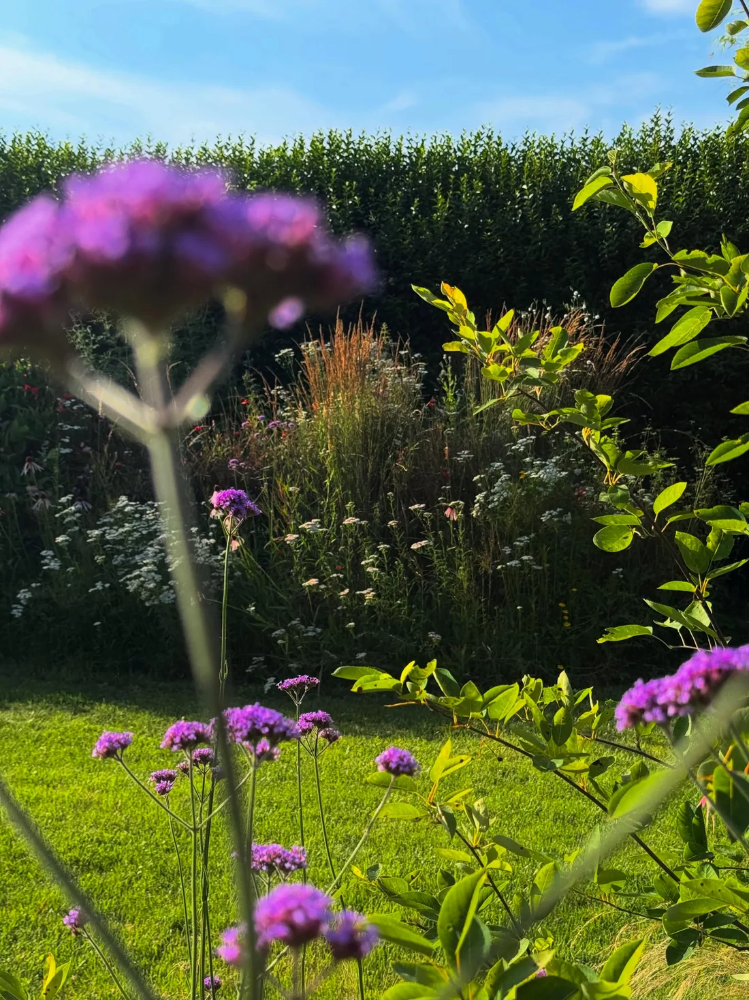
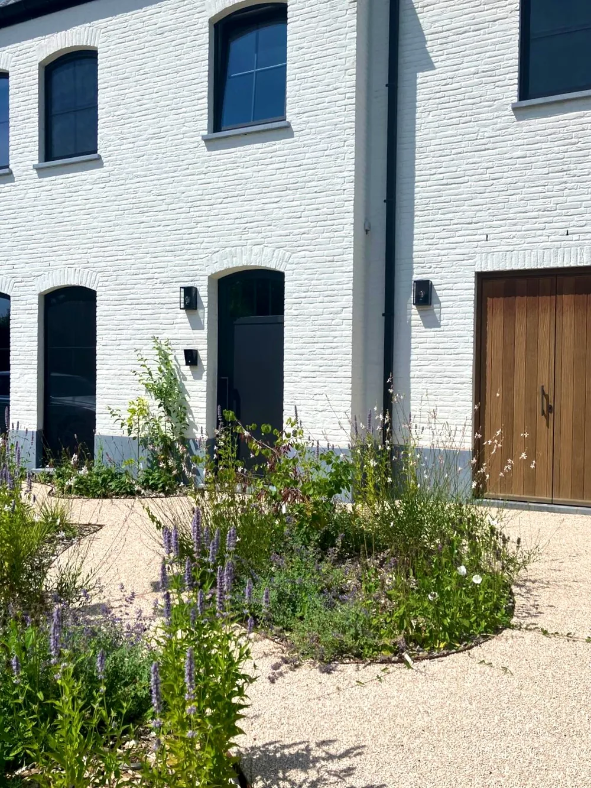
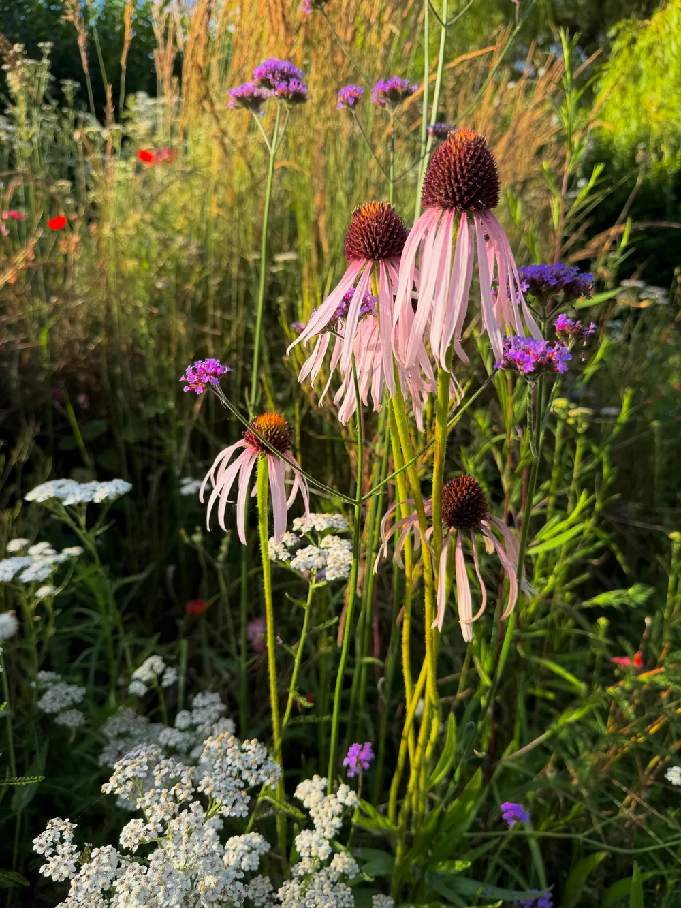
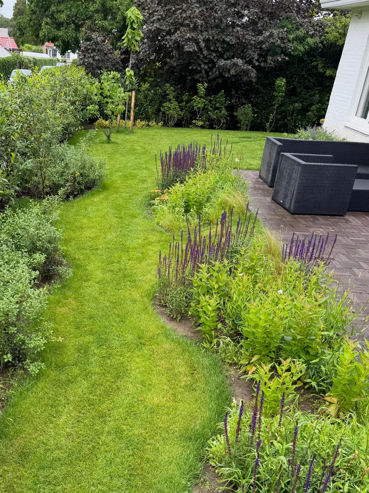
Een groot grasveld vraagt veel onderhoud en geeft weinig terug. Wij kiezen liever voor gelaagdheid: bloemen, struiken, klimplanten en bomen.
Elke tuin is voor ons een mini-ecosysteem. Hoe gevarieerder, hoe gezonder de bodem en hoe meer bijen, vogels en egels zich er thuis voelen. Van het eerste ontwerp tot het onderhoud achteraf.
Esthetiek en functionaliteit, hand in hand. Dat is een pretty wild garden.
Een ontwerp van nul, of een borderplan voor je bestaande tuin. We komen vrijblijvend langs.
Opritten en paden die regenwater gewoon laten doorsijpelen.
Vaste planten, ingezaaide bloemen en plekken waar water mag blijven staan.
Zodat je tuin geen momentopname blijft, maar elk jaar verder groeit.
Stadstuinen, voortuinen, een historisch pand en een poel voor de kikkers. Een greep uit ons werk.
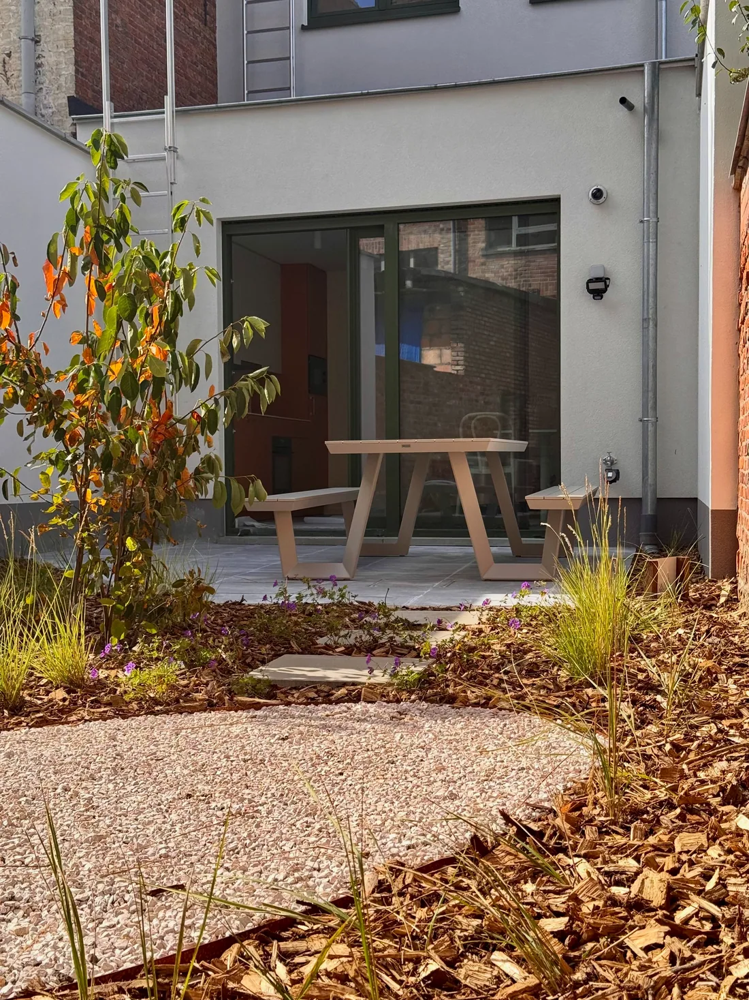
Een stadstuin bij een prachtig gerenoveerd studentenpand, samen met Inclusief Architecten.
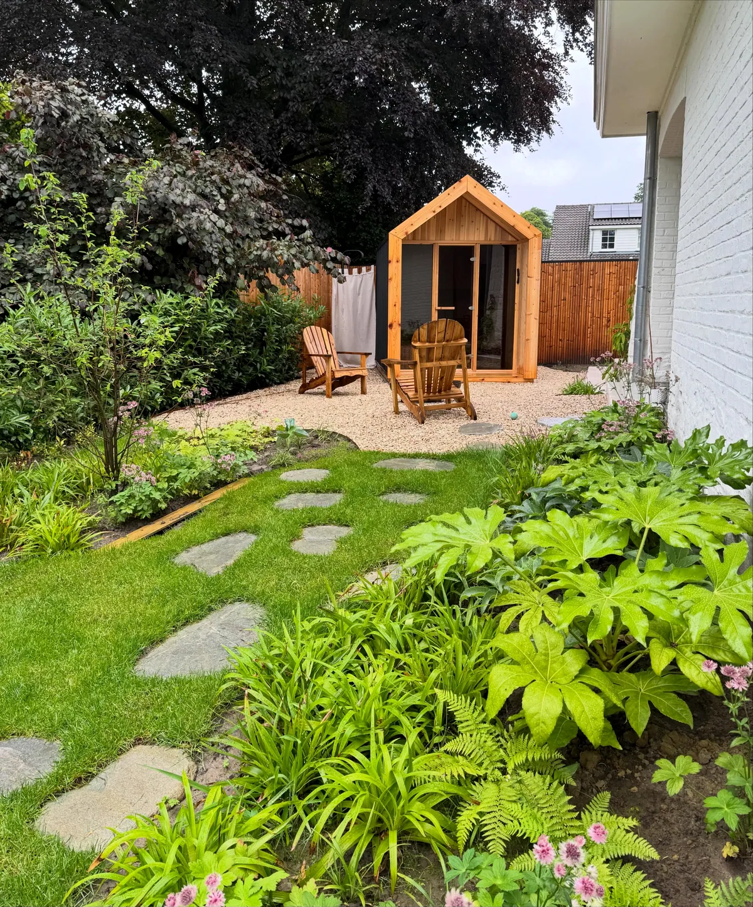
Sauna, vuurschaal en veel groen aan de schaduwzijde van het huis, aangelegd in de winter.
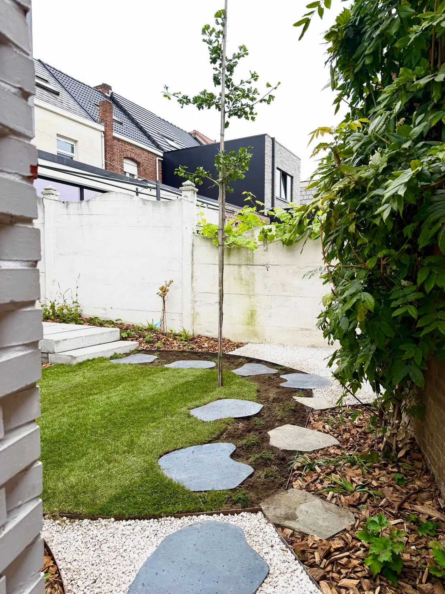
Meer groen, gelaagdheid en organische lijnen gaven deze stadstuin een frisse, ruime look.
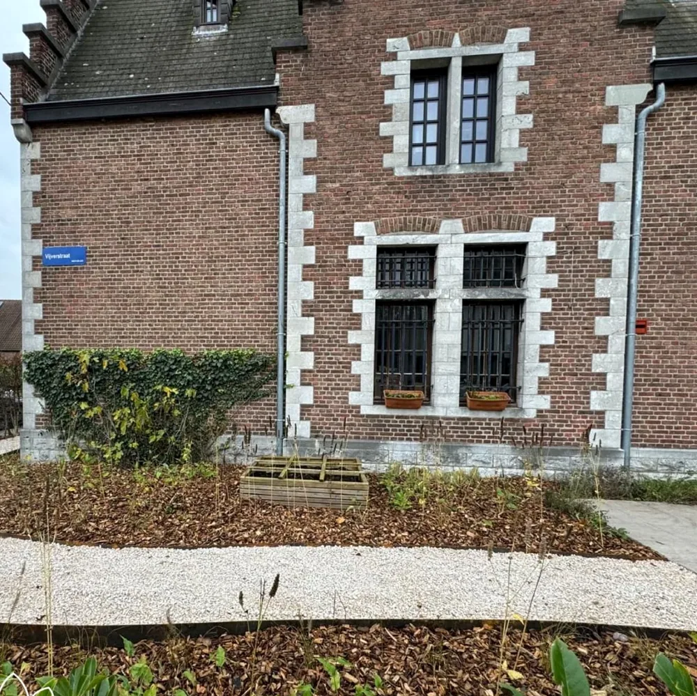
Van verwilderd onkruid naar bloemrijke borders en een waterdoorlatend wandelpad.
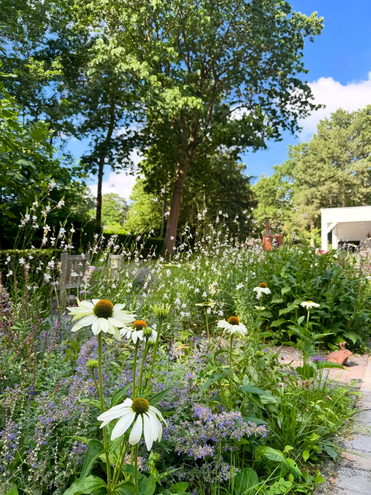
Statige buxusperken werden kleurrijke borders. Aangeplant in maart, dit is na amper één seizoen.
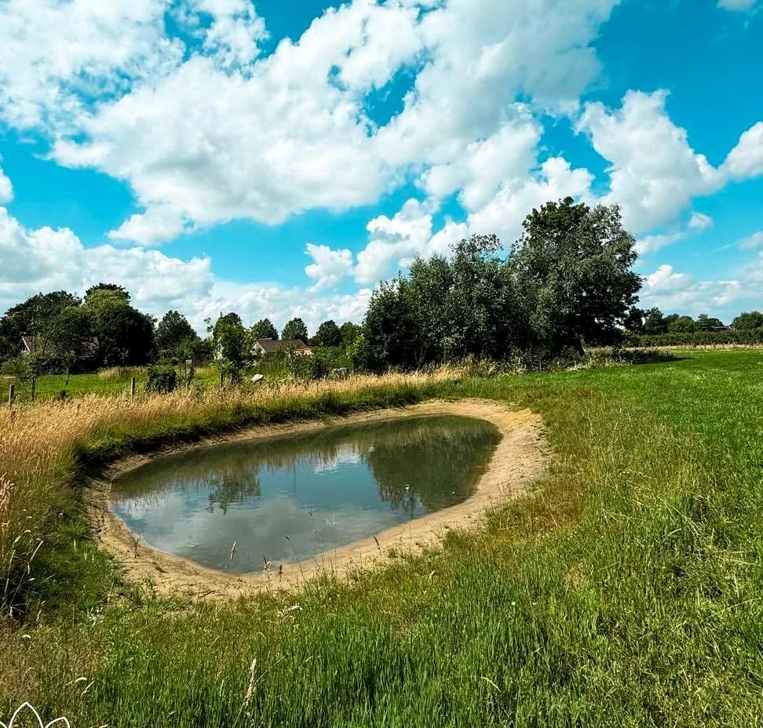
Met Regionaal Landschap Meetjesland, plus een houtkant met inheemse soorten.
Een waterdoorlatende oprit is niets waard zonder een stevige fundering. Zo bouwen we hem op, zodat regenwater geleidelijk wegzakt en je oprit niet verzakt.
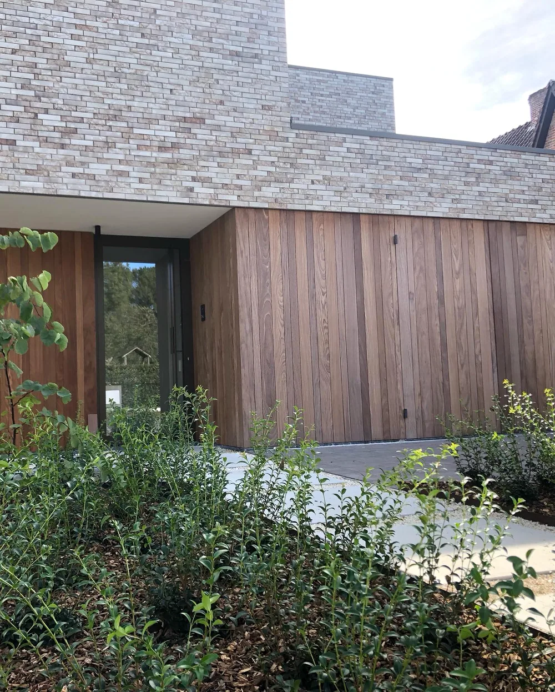
"Zeer duidelijke communicatie en absoluut een aanrader! Als je twijfelt: gewoon doen. De offerte was superduidelijk en de gemaakte afspraken werden perfect nageleefd. En het resultaat? Gewoon écht prachtig!"EElisabeth DechanyGoogle review
"Wij hebben 22 are tuin en we hadden behoorlijk wat stormschade en ontwortelde bomen. Matthias en zijn team hebben die klus heel professioneel aangepakt. Wij waren zo tevreden dat we besloten om toekomstige tuinwerken en klussen aan hun toe te vertrouwen."LLeen BaeyensGoogle review
"Wat een fijne samenwerking met Cosmos Gardens! Vanaf het eerste gesprek tot de uitwerking viel hun professionaliteit, meedenkende aanpak en indrukwekkende vakkennis meteen op. Ik was erg onder de indruk van de prachtige tuinontwerpen door Valerie."LLisa VereeckenGoogle review
We komen graag vrijblijvend langs om kennis te maken, je tuin te bekijken en een offerte op te stellen. Voor ontwerp, aanleg of onderhoud. Bel, mail of stuur een WhatsApp.
Ik maakte deze demo voor jullie om te tonen wat er kan. Na een kort gesprek maak ik er iets veel persoonlijkers van, helemaal naar jullie wens.
Vrijblijvend. Ik kom langs of we bellen.
Op maat, op jullie eigen domein.
Geen voorschot. Jullie betalen pas als alles klaar is.
Hosting, domeinnaam en kleine wijzigingen, zoals nieuwe openingsuren.
Omdat een voorbeeld meer zegt dan een mail. Zo zien jullie meteen wat er kan, en het kost jullie niets.
Nee. Het gesprek is vrijblijvend. Vinden jullie het niks, dan is het daarmee gedaan.
Na ons gesprek staat jullie site binnen 10 tot 14 dagen online.
Zeker. Jullie domeinnaam kan gewoon blijven, de nieuwe site komt in de plaats van de oude.
Nee, dat doe ik op basis van ons gesprek. Eigen foto's zijn mooi meegenomen, maar niet nodig om te starten.